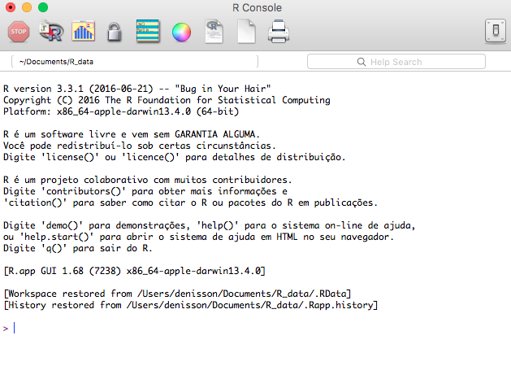
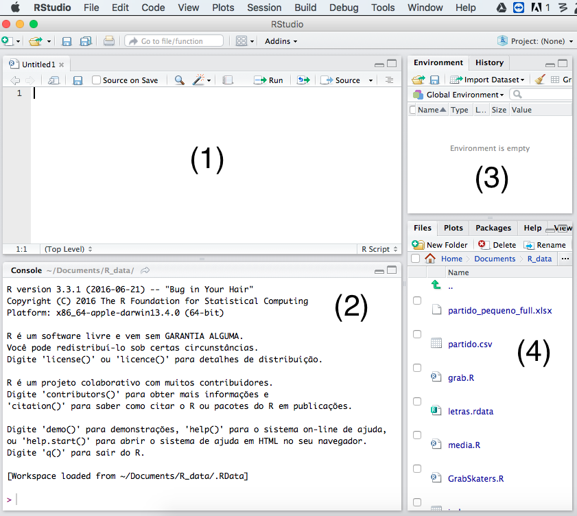
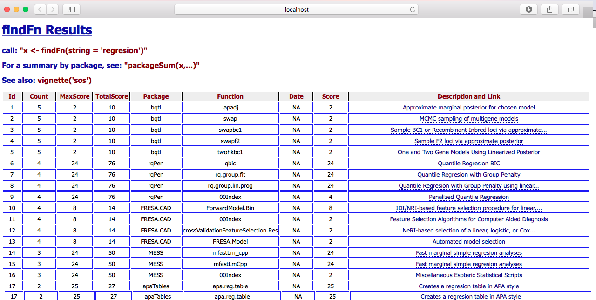

2 + 2[1] 4Este capítulo é o nosso primeiro encontro com o R. Nele, veremos alguns dos principais conceitos necessários para poder usá-lo para análise de dados – o que, afinal de contas, é o nosso principal objetivo.
Vale reforçar: esta não é uma introdução formal ao R. Antes, este capítulo cobre o fundamental para saltarmos diretamente para o uso de ferramentas mais avançadas, que nos ajudarão a fazer análise de dados e pesquisa acadêmica.
Antes de começar, no entanto, precisaremos instalar o R. Na verdade, precisaremos instalar dois softwares: o R e o RStudio. O primeiro é de fato o software por detrás da linguagem de programação, mas ele não possui um interface, como o Excel ou outros softwares de armazenamento e análise de dados. É por isso que usaremos o R por meio do segundo software, o RStudio, que é um interface com um conjunto de funcionalidades que nos ajudará a trabalhar com o R. Depois disso, o restante do capítulo focará em como escrever código em R, como salvar e manipular informações na memória, como usar funções e como instalar pacotes.
O R é um programa de código aberto1 que pode ser baixado gratuitamente em https://cran.r-project.org, o site oficial do projeto que mantém o R. Uma vez no site, basta buscar pela opção download e seguir as instruções específicas para o seu sistema operacional.2 A instalação deverá criar um atalho para o R no seu computador que, uma vez acessado, provavelmente mostrará algo como indica a Figura 1.1.

Sem uma interface, o R nada mais é do que um console, uma tela textual onde podemos ler e digitar código. Para termos uma interface melhor, podemos agora baixar o RStudio em https://posit.co/download/rstudio-desktop/, site da empresa que o mantém – apesar de desenvolverem também outras versões, o RStudio Desktop – Open Source License também é gratuito. Novamente, basta buscar a opção mais adequada para o seu sistema operacional e seguir as intruções de instalação. Abrindo o atalho do RStudio, a visão deverá ser bem melhor.

No RStudio, temos 4 sub-janelas por padrão, isto é, a janela do software é dividida em quatro áreas diferentes, como ilustra a Figura. Um resumo da utilidade de cada uma:
De início, o mais importante é pensar no RStudio como uma espécie de pacote Office, mas para o R: é nele que escreveremos nossos códigos, executaremos e visualizaremos os seus resultados.
A partir de agora, começaremos a aprender R do jeito mais direto possível: escrevendo e executando códigos. Para tanto, as próximas seções começarão a introduzir exemplos de código que, a princípio, podem parecer confusas. Mas não se preocupe: o objetivo é aprendermos R de forma prática, sem memorizações, entendendo o que cada parte de um código faz.
Daqui até o final do livro, o seguinte se aplicará:
[1] ou algo do tipo é output do R, isto é, o resultado da execução de um código;Assim como em outras linguagens de programação, podemos usar o R como uma calculadora. Experimento digitar 2 + 2 no console do RStudio e apertar enter:
2 + 2[1] 4O R reproduzirá o resultado da soma antecedido por [1]. Aproveitando a deixa, # indica um comentário: tudo o que vem sucedido de # o R não executará.
# 2 + 2Nada acontece. Comentários são úteis para documentar nossos códigos, algo que veremos em seguida. Por enquanto, experimente usar o console como uma calculadora (logo veremos usos mais interessantes do R):
8 + 7 # Adição (depois do #, nada é executado)[1] 158 - 7 # Subtração (depois do #, nada é executado)[1] 1Para resolver expressões numéricas, usamos ().3
2 / (3 + 5)[1] 0.254 * ((2 ^ 5) / 3)[1] 42.66667Anteriormente, usamos operadores aritméticos, como + e * (você deve ter percebido que * é o operador de multiplicação no R, e não x). No R, existem vários outros (tente adaptar os exemplos):
3^2[1] 911 / 5[1] 2.211 %/% 5[1] 211 %% 5[1] 1Caso você não tenha entendido algum apenas pelo seu uso, a Tabela 1.1 apresenta uma descrição dos principais operadores matemáticos comuns em R.
| Operação | Símbolo |
|---|---|
| Adição | + |
| Subtração | - |
| Divisão | / |
| Multiplicação | * |
| Exponenciação | ^ |
| Divisão inteira | %/% |
| Resto da divisão | %% |
Além dos operandos matemáticos, existem também operadores lógicos, que usamos para saber se algo é verdadeiro ou falso. Para sermos mais concretos, podemos usar == (dois =) para testar se um número é igual a outro:
1 == 1[1] TRUEO que o código anterior faz é testar se 1 é igual a 1, retornando TRUE. Um exemplo falso:
2 == 1[1] FALSETestes lógicos também nos permitem fazer operações mais complexas. Por exemplo, podemos testar se um número é maior ou menor que outro:
10 > 5[1] TRUE3 > 1[1] TRUEE, indo além, podemos combinar dois testes usando o operador & (que significa E, ou AND):
(10 > 5) & (3 > 1)[1] TRUE(10 > 5) & (5 < 2)[1] FALSENo caso acima, o resultado de cada expressão só será TRUE se ambos os testes forem verdadeiros. Se quisermos que o resultado seja TRUE se pelo menos um dos testes for verdadeiro, usamos o operador | (ou):
(10 > 5) | (5 < 2)[1] TRUEE se quisermos testar se um número ou valor pertence a um determinado conjunto? Usamos o operador %in%:
1 %in% c(1, 2, 3)[1] TRUE5 %in% c(1, 2, 3)[1] FALSE1:5 %in% c(1, 2, 3)[1] TRUE TRUE TRUE FALSE FALSETestes lógicos sempre retornam TRUE ou FALSE, em maiúsculo. Em R, algumas vezes é possível usar T e F para representar esses valores, mas não é algo recomendado.
A Tabela 1.2 apresenta os operadores lógicos mais comuns:
| Operação | Símbolo | Exemplo |
|---|---|---|
| Igualdade | == | 1 == 1 |
| Diferença | != | 1 != 1 |
| Maior que | > | 1 > 1 |
| Menor que | < | 1 < 1 |
| Maior ou igual | >= | 1 >= 1 |
| Menor ou igual | <= | 1 <= 1 |
| E | & | (1 == 1) & (2 == 2) |
| OU | | | (1 == 1) | (2 == 2) |
| NÃO | ! | !(1 == 1) |
| Pertence | %in% | 1 %in% c(1, 2, 3) |
Todos esses operadores são úteis – mas certamente não é por causa deles que o R é tão utilizado.
Parte da potencialidade do R advém do fato dele conter uma série de funções nativas para realizar as mais diversas tarefas de pesquisa. É por isso que ele é considerado um ambiente, e não apenas uma linguagem de programação.4 Dito de forma simples, funções são códigos que executam uma tarefa específica. A função sqrt(), por exemplo, calcula a raiz quadrada de um número:
sqrt(4) # Raiz quadrada do número 4[1] 2Em R, funções têm uma anatomia específica: o nome da função, seguido de parênteses, dentro dos quais estão os argumentos da função – o input que a função recebe e processa. No caso da função sqrt(), o argumento é o número cuja raiz quadrada queremos calcular.5 Vale memorizar: uma função nada mais é do que uma espécie de ferramenta que recebe uma determinada informação e a transforma em outra.6
No R, as informações que passamos para determinada função vão dentro de parêntesis. A função sum, por exemplo, recebe e soma dois ou mais números, todos separados por vírgula. Se esquecermos de fazer essa separação, obtemos um erro.
sum(2 2) # retorna erro Error: <text>:1:7: unexpected numeric constant
1: sum(2 2
^Quando executamos um código que o R não consegue interpretar, ele retorna um erro no console.
Para corrigir o código anterior, basta separar os números por vírgula:
sum(2, 2) # retorna 4[1] 4Há algumas outras funções que podemos usar para trabalhar com números. A função abs(), por exemplo, retorna o valor absoluto de um número, isto é, o número sem o sinal negativo:
abs(-5) # retorna 5[1] 5A função round() arredonda um número com casa decimal para o número inteiro mais próximo:
round(3.14) # retorna 3[1] 3Algumas funções em R, no entanto, não recebem e transformam números, mas sim textos. Diferentemente de números, textos devem estar contidos entre aspas para o R o reconhecer como tal. Experimente, por exemplo, digitar o seguinte no console:
"Um texto"[1] "Um texto"E, agora, experimente digitar o mesmo texto sem as aspas:
Um textoError: <text>:1:4: unexpected symbol
1: Um texto
^Esse é um erro comum para quem está começando a programar em R. O R não reconhece Um texto como um texto, mas sim como um objeto que deveria ser uma função ou um objeto já criado. Tomado esse cuidado, podemos usar funções próprias para manipulação de textos. A função toupper(), por exemplo, transforma um texto com letras minúsculas para outro com letras maiúsculas:
toupper("Um texto")[1] "UM TEXTO"De forma similar, o R nos oferece uma função conveniente, nchar(), para sabermos quantos caracteres têm um texto ou palavra:
nchar("Um texto maior")[1] 14Algo que é extremamente útil, e que veremos de relance agora, é como combinar textos. A função paste() faz exatamente isso (o exemplo, assim, parece trivial, mas logo veremos que não é):
paste("Um texto", "maior")[1] "Um texto maior"Note que, no exemplo anterior, temos dois textos separados por uma vírgula, mas a função paste() os combina em um único texto que é retornado no console.
Para além de executar código, o R nos permite salvar informações na memória do programa. Essas informações são armazenadas em objetos, que podem ser usados posteriormente. De forma bem simples, objetos são como locais na memória do programa que armazenam valores quaiser. No R esses valores podem ser: números, textos, um vetor de números (isto é, uma sequência de números), um banco de dados e, até mesmo, uma função.
Podemos armazenar objetos no R com o operador <- (menor que, seguido de hífen). Basicamente, ele diz ao R para armazenar um valor em um objeto para podermos acessá-lo posteriormente. Exemplo: vamos salvar o número 2 em um objeto chamado x.
x <- 2Tocamos em algo extremamente importante: agora, podemos digitar x no lugar de 2 para realizar outras operações.
x[1] 2x + 1[1] 3x / 2[1] 1E como fazemos para salvar o resultado de uma nova operação, como x + 10, por exemplo? Simples: basta criar um novo objeto.
y <- x + 10
y[1] 12Também é possível armazenar texto em um objeto. Note que, para o R reconhecer algo como texto, precisamos colocá-lo entre aspas:
texto <- "um texto"
texto[1] "um texto"No R elementos entre aspas, simples ou duplas, são considerados textos.
No R também é possível criar objetos usando o símbolo de igualdade, =, como em x = 1. No entanto, não usaremos essa sintaxe neste livro e, por razões de consistência de código, também não recomendamos seu uso.
Números são diferentes de textos e, em R, essa diferença também existe: ela é dada pelas classes de objetos. Classes são como categorias de objetos, isto é, grupos de objetos que compartilham de uma mesma estrutura e, portanto, podem ser manipulados de forma semelhante. O número 1 é um objeto da classe integer (inteiro), assim como os números 2 e 10, que também são inteiros. O número 1,5, ao contrário, é um objeto da classe numeric, dado que não é um número inteiro (por conta da casa decimal). Para saber a classe de um objeto, usamos a função class():
class(1)[1] "numeric"class(1.5)[1] "numeric"Diferentes funções podem exigir diferentes classes de objetos. Por exemplo, a função sum() exige que os objetos que ela soma sejam da classe numeric ou integer. Se tentarmos somar um objeto da classe character, o R retornará um erro:
sum("1", "2")Error in sum("1", "2"): 'type' inválido (character) do argumentoPara resumir, classes determinam o tipo de informação que diferentes objetos armazenam e o que podemos fazer com elas. Entendido isso, podemos começar a aprender sobre as classes mais comuns no R: integer, numeric, character, factor, matrix, data.frame e list.
integer é uma classe de objeto específica para números inteiros.
exemplo_inteiro <- 20
class(exemplo_inteiro)[1] "numeric"Até agora, só criamos objetos com um elemento, mas, quando estamos analisando muitos dados, podemos combiná-los em vetores, ou seja, objetos com mais de um elementos (mais de um caso). Uma forma elementar de criar um vetor é por meio da função combine, c:
# Cria um vetor de números
x <- c(18, 20, 19, 25, 21)
x[1] 18 20 19 25 21A classe numeric também é composta por números, mas, diferentemente de integer, armazenam números decimais.
exemplo_decimal <- 20.5
class(exemplo_decimal)[1] "numeric"Por padrão, o R já atribui classe aos objetos quando os criamos, deduzindo o tipo adequado a partir do nosso código. No caso de integer ou numeric, a escolha está atrelada à quantidade de memória reservada no programa para armazenar as informações: quando temos números decimais, a classe sempre será numeric pois é necessário mais espaço para guardar informações das casas decimais, e todos os números do vetor passaram a ter um decilma, mesmo aqueles que foram declarados (inseridos) sem decimal:7
y <- c(50, 65.5, 55.8, 70, 85.6)
class(y)[1] "numeric"O R adota o sistema de casas decimais americano, com ponto. Por isso, ao declarar um número decimal no R, usamos o ponto, e não a vírgula.
Como já dito, character é a classe usada no R para armazenar informações textuais, que devem estar contidas entre aspas.
w <- c("superior", "médio", "fundamental", "superior")
class(w)[1] "character"Assim como vimos com informações números, há várias funções no R para trabalharmos com texto. A função nchar(), por exemplo, nos diz quantos caracteres têm um determinado texto:
nchar("um texto") # retorna 8[1] 8A função toupper(), por sua vez, transforma um texto em letras maiúsculas:
toupper("um texto") # retorna "UM TEXTO"[1] "UM TEXTO"O importante a fixar é que algumas funções servem para trabalhar com números, outras com textos – e, às vezes, com ambos os tipos de informação. Mas isso não é tudo.
Similar a character, factor é uma classe que guarda simulneamente uma informação textual com uma númerica associada – o que costumamos chamar de variável categórica nas Ciências Sociais e similares.
z <- factor(c("Feminino", "Masculino", "Feminino", "Masculino", "Feminino"))
class(z)[1] "factor"z[1] Feminino Masculino Feminino Masculino Feminino
Levels: Feminino MasculinoComo podemos ver pelo retorno do R anterior, um vetor da classe factor nos mostra seus levels, ou seja, as categorias da nossa variavel: Feminino e Masculino. Mas, como podemos ver, o R não nos mostra os valores numéricos associados a cada categoria. Para isso, podemos usar a função as.numeric(), que converte objetos de outras classes para numeric (quando essa conversão for possível):
as.numeric(z)[1] 1 2 1 2 1A classe matrix é um tipo de objeto bidimensional utilizada principalmente para representar linhas e colunas. De forma geral, matrizes são espécies de tabelas ou planilhas como as que vemos no Excel, mas com uma diferença essencial: todos os elementos devem ser do mesmo tipo, isto é, todos numeric, integer, character, e assim por diante.
Podemos criar uma matriz com a função matrix, declarando argumentos que indicam quantas linhas e quantas colunas essa matriz deverá ter. Um exemplo de matriz:
matriz <- matrix(c(1, 3, 4, 5, 6, 7), nrow = 2, ncol = 3)
matriz [,1] [,2] [,3]
[1,] 1 4 6
[2,] 3 5 7class(matriz)[1] "matrix" "array" Note que, no exemplo anterior, criamos uma matriz com 2 linhas e 3 coluna epassamos a ela um vetor com os elementos c(1, 3, 4, 5, 6, 7). Em outras palavras, os argumentos nrow (i.e., número de linhas) e ncol (i.e., número de colunas) determinam como o conteúdo da matriz será dividido entre linhas e colunas.
Já que matrizes salvam apenas informações da mesma classe, naturalmente precisamos de outra classe se quisermos analisar variáveis, ou colunas, de classes diferentes. data.frame é exatamente a classe que nos permite fazer isso. Especificamente, data.frame também é bidimensional e tabular, como a matrix, mas é mais versátil.
Vamos criar aqui um banco de dados a partir de vetores com a função data.frame:
x <- c("Superior", "Médio", "Médio")
y <- c(23, 45, 63)
z <- c("Feminino", "Masculino", "Masculino")
banco <- data.frame(escolaridade = x, idade = y, sexo = z)
class(banco)[1] "data.frame"Com o banco criado, podemos ver suas informações com a função print, que serve para mostrar no console o conteúdo de um objeto:
print(banco) escolaridade idade sexo
1 Superior 23 Feminino
2 Médio 45 Masculino
3 Médio 63 MasculinoPara o caso de bancos maiores, podemos usar a função View(), que abrirá uma nova janela no RStudio com o conteúdo do banco de dados.8
Para criar matrizes e bancos de dados a partir de vetores, todos eles precisam ter o mesmo número de elementos, caso contrário o R retornará um erro.
Finalmente, os objetos da classe list são um dos mais complexos que veremos – eles são multimensionais. Em particular, com eles armazenamos objetos de diferentes classes, mas não só vetores do mesmo tamanho como em um data.frame. Ou seja, em um objeto tipo list podemos armazenar vetores de diversos tamanhos, matrix e data.frame, ou mesmo outras listas. Vejamos um exemplo:
# Cria uma lista chamada 'guarda_trecos'
guarda_trecos <- list(x, y, z, banco)
class(guarda_trecos)[1] "list"print(guarda_trecos)[[1]]
[1] "Superior" "Médio" "Médio"
[[2]]
[1] 23 45 63
[[3]]
[1] "Feminino" "Masculino" "Masculino"
[[4]]
escolaridade idade sexo
1 Superior 23 Feminino
2 Médio 45 Masculino
3 Médio 63 MasculinoComo podemos ver cada item (objeto) foi armazendos na lista guarda_trecos, na ordem em que foram colocado dentro da função list().
Criamos alguns objetos de distintas classes e exibimos eles por completo no console. Mas e se quisermos apresentar no console apenas um elemento de um objeto? Para isso precisamos nos mover pelos objetos usandos índices. Ao exibir elementos de um objeto no console, o R há nos dá uma dica de como fazer isso: o [1] sempre indica o conteúdo do primeiro elemento. Se quisermos acessá-lo, basta executar:
x <- c(1, 2, 3, 4, 5)
x[1][1] 1De forma geral, em objetos unidimensional basta usar objeto[índice], com a posição desejada em colchetes, para acessar determinado elemento, como o quarto e o quinto, digamos:
x[4][1] 4x[5][1] 5x[c(4, 5)] # Podemos outro vetor para acessar mais de um elemento[1] 4 5Em objetos multidimensionais como um data.frame o modo de acesso de um elemento é um pouco diferente. Por exemplo, no nosso objeto banco criado anteriormente precisamos indexar linhas e colunas, objeto[linhas, colunas]. Para acessar a célula da primeira linha e da terceira coluna, usamos:
banco[1, 3][1] "Feminino"No exemplo acima, estamo selecionando o elemento (caso) numero 1 que estar na coluna (variável) 3 que é o sexo. É importante fixar: em objeto bidimensional como um data.frame, antes da virgula nos colchetes temos as linhas e, só depois da virgula, as colunas. Outro caso:
banco[, 3][1] "Feminino" "Masculino" "Masculino"Quando deixamos o do lado esquerdo do colchete vazio, estamos dizendo ao R que retorne um vetor com todas as linhas (casos) da coluna (variável) identificada no lado direito da virgula. Nesse exemplo, temos o sexo de todas as pessoas no banco. Já aqui, pegamos todas as informações da pessoa na segunda linha do banco:
banco[2, ] escolaridade idade sexo
2 Médio 45 MasculinoSe quizermos selecionar mais um caso ou variável podemos usar um vetor, também podemos usar vetores usando a função c ou dois pontos, para criar uma sequência de inteiros entre dois números:
banco[3:5, c(1, 3)] escolaridade sexo
3 Médio Masculino
NA <NA> <NA>
NA.1 <NA> <NA>No exemplo acima estamos selecionando os casos de 3 a 5 (o código 3:5 cria uma sequência de inteiros de 3 a 5) da base de dados e as variáveis 1 e 3.
Indexadores também funcionam em listas, mas com uma diferença: como listas são objetos multimensionais, precisamos usar dois conjuntos de colchetes para acessar elementos. Por exemplo, para acessar o primeiro elemento da lista guarda_trecos, usamos:
guarda_trecos[[1]][1] "Superior" "Médio" "Médio" O primeiro conjunto de colchetes indica que queremos acessar um elemento da lista, enquanto o segundo indica qual elemento queremos acessar. Se quisermos acessar um valor dentro do primeiro elemento da lista, basta adicionar um colchete simples logo depois dos colchetes duplos indicando o índice do elemento desejado:
guarda_trecos[[1]][2][1] "Médio"Com isso, selecionamos o segundo elemento do vetor amarzenado na sublista 1. E se o conteúdo da sublista for um data.frame, como aceso um valor dentro dele? Assim:
guarda_trecos[[4]][1, 3][1] "Feminino"Para data.frames, há um jeito mais simples de se acessar o conteúdo inteiro de uma variável: por meio do cifrão ($). Por exemplo, para acessar a variável sexo do banco, basta executar:
banco$sexo[1] "Feminino" "Masculino" "Masculino"Como dá para notar, é preciso saber o nome da coluna que queremos acessar para usar esse meio de indexação. Um jeito simples de fazer isso é usando a função names(), que retorna os nomes das colunas de um data.frame:
names(banco)[1] "escolaridade" "idade" "sexo" Assim sabemos que a primeira variável se chama “escolaridade”, a segunda “idade”, e assim por diante.
Combinando o $ com os indexadores que vimos há pouco, é fácil obter, por exemplo, o terceiro elemento da variável sexo no objeto banco:
banco$sexo[3][1] "Masculino"Manipular objetos no R pode parecer bastante complicado, mas, com o devido tempo e prática, tudo se torna mais simples. Ao final deste capítulo, sugerimos alguns exercícios que ajudarão no processo.
Criar objetos e manipulá-los pode ser algo que rapidamente foge de controle. Por exemplo, imagine que queremos calcular a média da variável idade do objeto banco e, depois, calcular a sua raiz quadrada com a função sqrt. Para isso, executaríamos:
media_idade <- mean(banco$idade)
sqrt(media_idade)[1] 6.608076Para evitar ter que criar um objeto intermediário para salvar a média, podemos usar pipes, que são representados por |>.9 Eles servem para encadear resultados de funções, isto é, executar uma função e, em seguida, executar outra função com o resultado da primeira. No exemplo anterior, poderíamos usar o pipe para calcular a média e, em seguida, calcular a raiz quadrada do resultado com o seguinte código:
banco$idade |>
mean() |>
sqrt()[1] 6.608076O código acima é muito mais legível. Podemos, inclusive, ler o código como se fosse uma frase: “pegue a variável idade do objeto banco e jogue ela dentro da função que calcula a média; depois, pegue esse resultado e jogue ele dentro da função que calcula a raiz quadrada”.10 Com pipes, podemos criar complexas sequências:
banco$idade |>
mean() |>
sqrt() |>
round() |>
print()[1] 7Talvez esse tópico pareça um pouco confuso agora, mas, quando começarmos a cobrir a manipulação de bases de dados, no Capítulo 3, pipes serão uma ferramenta essencial.
O R já vem com uma série de funcionalidades embutidas nele – como as funções sqrt e sum, que já vimos. Mas, como já dito, uma das grandes vantagens do R é a sua comunidade, que desenvolve novas funcionalidades para a linguagem e, norlamente, as disponibilizam por meio de pacotes, ou bibliotecas. Estes são como extensões do R, que adicionam novas funcionalidades ao programa – pense em um pacote como um livro de receitas ou um manual de instruções, que ensina o R como fazer coisas novas.
Em R, a principal fonte de pacotes o CRAN (The Comprehensive R Archive Network), que é uma comunidade de desenvolvedores que mantém o código base do R e os seus pacotes oficiais, aqueles que passaram por uma série de testes e que seguem uma série de protocolos que garantem o seu funcionamento estável e harmônico com outras ferramentas no R.11
Para instalar pacotes que está no CRAN, basta sabermos o seu nome e usar a função install.packages:
install.packages("electionsBR")No exemplo acima, instalamos o pacote electionsBR e, com ele, damos ao R a capacidade de se conectar ao repositório de dados eleitorais do TSE (Tribunal Superior Eleitoral) para obter informações eleitorais.
Apesar da imensidade de pacotes no CRAN, encontramos outro grande volume de pacotes em outros repositórios não-oficiais, a maioria em densevolvimento. A principal fonte destes pacotes, depois do CRAN, é o GitHub.12
Para instalar pacotes do GitHub, precisamos instalar outro pacote antes, o remotes:
install.packages("remotes")Este pacote contém uma função, install_github, que permite ao R se conectar ao GitHub, obter de lá o código fonte de um pacote e realizar a sua instalação. Para usar esta função, precisamos antes carregar o pacote remotes, isto é, tornar ela acessível ao R, o que fazemos por meio da função library:
library(remotes) # Carrega o pacote
install_github("silvadenisson/electionsBR") # Instala o pacoteInstalar e carregar pacotes são duas tarefas similares, mas suas diferenças são importantes: no primeiro caso, estamos incorporando novas funções no nosso R, assim como instalar o Office no computador nos permite usar o processador de texto Word; no segundo caso, estamos carregando o pacote instalado, assim como quando abrimos o Word pelo seu atalho no computador.
Pacotes só precisam ser instalados uma vez, mas precisam ser carregados (abertos) no R em cada seção em que precisarmos de suas funções.
No exemplo anterior, usamos a função library para carregar o pacote remotes; com este, usamos a função install_github para instalarmos a versão de desenvolvimento do pacote electionsBR.
Trabalhar no console, digitando e executando código diretamente de lá, é algo rápido para tarefas simples, mas inviável para análises mais complicadas. Pior que isso, sem poder salvar nossos códigos em algum lugar, não temos como reproduzir uma análise, ou compartilhar nossos passos com outras pessoas. Justamente para evitar isso, usamos scripts, documentos de texto que servem para documentar e armazenar códigos.
No Rstudio, podemos criar um script clicando, no menu superior esquerdo, em File > New File > R Script, ou, também no canto superior esquerdo, no símbolo de uma folha em branco acompanhada de um símbolo de mais em verde. Feito isso, uma nova janela será aberta, na qual podemos escrever nosso códigos. Para salvá-los, basta clicar em File > Save e escolher um nome para o arquivo, ou clicar no ícone de disquete ligeiramente acima, ou, ainda, teclar ctrl/command + s. O script salvo aparecerá na sub-janela de gestão de arquivos do RStudio, indicada no item 4 da Figura 1.2.
Para acompanhar o restante deste capítulo e os próximos, acostume-se a criar scripts e use comentários para descrever o que cada linha faz – isso será muito útil para documentar o que estamos aprendendo. A título de exemplo, um script de acompanhamento deste capítulo poderia ter o seguinte início:
# Capítulo 1: Introdução ao R
# Este é um comentário. Ele não é executado pelo R, mas serve para documentar o que estamos fazendo.
# Para executar um código, basta clicar na linha e teclar ctrl/command + enter.
# Para executar várias linhas, basta selecioná-las e teclar ctrl/command + enter.
# Criando objetos
x <- 2
y <- x + 10
# ...Documentar o script é uma das tarefas mais importantes do densolvimento do seu código. Primeiro porque podes voltar em um outro momento e saber o que exatamente estas tentendo fazer com seu script. Isso pode parecer tolice, mas tenha certeza que não é, principalmente quando chegamos no nível de trabalhar com muitos scripts.
Esse motivo acima já sería suficiente, no entanto, há outro mais importante para o desenvolvimento de pesquisas científicas que é a replicabilidade. Pois, quando documenta teu código aumenta a capacidade replicativa dele. E replicabilidade é a plavra que chave na ciência, porque não fazemos ciência para ficar na gaveta, ou melhor, em pasta perdida dentro do computador, e sim para que outra pessoa saibam o que fizemos e possam replicar, vamos abordar mais sobre replicação no capítulo 8.
Podemos criar objetos e realizar operações no R de forma simples, como vimos. No entanto, algumas coisas devem ser evitadas quando escrevemos nosso código, seja para evitar erros ou para facilitar a leitura dele por outras pessoas.
A recomendação mais básica neste sentido é: evite criar objetos com nomes que comecem com números, caracteres especiais ou nomes de funções. Algumas destas coisas produzirão erros imediatos; outras, podem complicar códigos inteiros. Alguns exemplos.
# Exemplos de nomes de objetos que produzem erros
2x <- 1
_x <- 1
&x <- 1Error: <text>:2:2: unexpected symbol
1: # Exemplos de nomes de objetos que produzem erros
2: 2x
^# Exemplos de nomes de objetos que não produzem erros imediatos
sum <- 1
sqrt <- 1Também note que o R é case sensitive, A (maiúsculo) não é a mesma coisa que a (minúsculo).
A <- 1
print(a)Error in eval(expr, envir, enclos): objeto 'a' não encontradoSempre que criar um objeto armazenando texto, não esqueça das aspas (outra forma de cometer erros no R bastante comum).
x <- TextoError in eval(expr, envir, enclos): objeto 'Texto' não encontradoPor fim, quando abrir parênteses, não esqueça de fechá-los (caso contrário, aparecerá um + no console, indicando que o R espera mais conteúdo). Caso esteja executando um código e não saiba porque apareceu um + no cosole, opte por cancelar a operação e volte ao código para ver o que há de errado.13
Não é algo obrigatóro, mas algumas noções de estilo nos ajudam a compreender e partilhar códigos, tanto nossos quanto os de outras pessoas. Resumidamente, as principais considerações aqui são:
y<-1 # Ruim
y <- 1 # OK
y+y+y+y # Ruim[1] 4y + y + y + y # OK[1] 4print (y) # Ruim[1] 1print(y) # OK[1] 1y = 1 # Ruim
y <- 1 # OK
OBJETO <- 1 # Ruim
objeto <- 1 # OK
meu.objeto <- 1 # Ruim
meu_objeto <- 1 # OK
objeto_com_nome_excessivamente_grande <- 1 # Ruim
objeto <- 1 # OKPara uma lista mais completa de recomendações, pessoas desenvolvedoras por trás do RStudio criaram um website com um guia completo de estilo em R – feito especificamente para pessoas que usam seus pacotes. O guia pode ser visto em: https://style.tidyverse.org/.
Para a nossa sorte, a comunidade em torno do R cresceu muito nos últimos anos e, com ela, a quantidade de material disponível na internet. Sempre é bom dizer: dúvidas e erros podem e devem ser buscados no Google ou, mais recentemente, no ChatGPT14 ou Google Bard15, ótimas fontes para resolução de dúvidas. De toda forma, a maneira mais simples de se obter ajuda no R sobre alguma função ou operador é consultando a sua documentação – em geral, muito boa. Para isso, podemos usar a função help:
help(sum)Esse recurso só é útil, entretanto, quando sabemos o nome exato da função que queremos consultar (e quando a temos instalado e carregado o pacote que a função pertence). Outra forma de consultar documentação é usando um ponto de interrogação antes do nome de uma função:
?sumQuando não sabemos o nome da função que queremos usar, ou até mesmo para saber se existe no R uma função específica para uma determinada tarefa que queremos executar, precisamos recorrer a outras fontes. Antes mesmo de ir para o Google, contudo, há no próprio R um pacote que faz uma busca por palavras-chave nos repositórios oficiais do R, o sos. Para usá-lo, precisamos instalá-lo e, depois, carregá-lo:
install.packages("sos")library(sos)E, então, usar a função findFn, que tem como argumento principal um texto (string) que será pesquisado. Exemplo:
findFn('regresion')Quando executada, a função irá abrir seu navegador em uma pagina com os resultado, como a Figura 1.4 ilustra.

Como é possível ver, usando o pacote sos obtemos uma lista com nome de pacotes, o nome da função específica que tem algum relação com o termo pesquisado e uma breve descrição e página que podemos acessar para ver mais detalhes.
Pela nossa experiência recente oferecendo treinamento em R, muitas pessoas ou não usam, ou usam inadequadamente, soluções como o ChatGPT para obter ajudar. Por isso, algumas dicas para obter recursos de forma mais eficiente e eficaz:16
Não use o ChatGPT para gerar código do zero – esse é o pior uso possível dele; sempre escreva algum código antes de pedir ajuda – caso contrário, ele poderá usar pacotes ou funções, ou mesmo seguir uma lógica, que você não conhece;
Não use o ChatGPT para obter ajuda sobre pacotes ou funções que você não conhece – use o help ou o ? para isso; modelos de linguagem não são tão bons para recuperar informações factuais, pelo menos não sem contexto ou conexão com fontes de informação;
Tente seguir um modelo de ajuda específico: descreva em palavras o que está tentando fazer; cole o código que estava usando; e, ao final, cole o erro ou a mensagem obtida no console. Um exemplo:
Estou tentando criar um objeto chamado
xcom o valor 2 no R, mas obtive um erro ao tentar somarx+x. O que estou fazendo de errado? Segue o código que usei e o erro que obtive:
x <- "2" x + x
Error in x + x: argumento não-numérico para operador binário
Um exemplo de como ele poderia responder:
O erro ocorreu porque você atribuiu o valor 2 a x como uma string (texto), e não como um número. No R, os valores entre aspas (” “) são tratados como texto (ou caracteres), e não como números. Por isso, quando você tentou somar x + x, o R não conseguiu realizar a operação, pois estava tentando somar textos, não números. Para corrigir o erro e fazer a soma funcionar, você deve atribuir o valor 2 a x sem as aspas, assim:
x <- 2
x + xE, dessa forma, em vez de apenas pedir um código e não entender o que ele faz, ganhamos uma explicação didática sobre o que estava errado.
Alem das opções de ajuda dentro do próprio R, a internete está cheia de material sobre. Por exemplo, nos últimos anos aumentou largamente a quantia de tutoriais no YouTube ensinando as mais diversas tarefas em R. Mais útil, há várias fontes ricas para buscar sobre os mais diferentes tópicos, como o Stackoverflow, R-bloggers, R Brasil - Programadores (Facebook), rbloggersbr (twitter), entre outros.
O primeiro deles, o Stackoverflow, é um fórum onde programadores de todos os níveis e linguagens publicam suas dúvidas e soluções a elas. Originalmente em inglês, conta também com uma versão em português: https://pt.stackoverflow.com. Para refinar as busca dentro do fórum é necessario, antes do termo buscado, inserir o nome da linguagem dentro de colchetes. Por exemplo: [R] data.frame.
O R-bloggers é outro site famoso na comunidade de R por reunir postagens de vários blogs sobre R. Em certo sentido, ele é um agregador de tutoriais (em inglês). Seu endereço é https://www.r-bloggers.com/tag/rblogs/.
Em português, finalmente, há também uma iniciativa no Twitter para agregar as postagens do blogs brasileiros cadastrados, https://twitter.com/rbloggersbr. Para quem costuma usar a rede social, basta postar sobre R usando a hashtag #rstats para rapidamente se conectar a outras pessoas interessadas pela linguagem – no fim das contas, como sugerimos ao longo deste capítulo, o R é também uma comunidade, e não apenas uma linguagem de programação.
Neste capítulo, aprendemos os conceitos básicos do R, como instalar e carregar pacotes, criar objetos, usar funções e obter ajuda. Também vimos algumas recomendações para escrever códigos mais legíveis e eficientes. Com o que vimos aqui, ainda não conseguimos fazer análises em R, mas já aprendemos a usar alguns dos ingredientes que precisaremos para isso.
No início, não há alternativa: a melhor forma de aprender R é escrever código em R. Por isso, para quem deseja ir além do que vimos, recomendamos fortemente a realização dos exercícios deste capítulo – mesmo que você já tenha feito algum curso de R antes. Para além destes, para quem deseja complementar a leitura com vídeos, sugerimos a série vídeos introdutórios feitos pelo R Ladies Belo Horizonte, capítulo local do R Ladies Global17, que está disponível no YouTube.
Por ser também uma linguagem de programação, o R conta com recursos, que não vimos neste capítulo, como estruturas de controle de fluxo e funções, que se conectam a tópicos mais gerais de programação, como programação funcional e orientada a objetos. Em um curso de introdução à linguagem, ou de introdução à programação de forma mais geral, alguns desses tópicos são abordados já no início. Nesse ponto, sugerimos a leitura do livro de Aquino (2014), que avança por alguns deles.
Crie um objeto chamado meu_ano_nascimento e salve nele o ano do seu nascimento. Em seguida, crie um objeto chamado ano_atual e salve nele o ano atual. Por fim, crie um objeto chamado minha_idade e atribua a ele a diferença entre ano_atual e meu_ano_nascimento. Use o console para visualizar o valor de minha_idade.
Crie um objeto chamado meu_nome e salve nele o seu nome como um texto (lembre-se de usar aspas). Em seguida, use a função a paste() para criar uma frase que diga “Meu nome é [meu_nome]”, substituindo [meu_nome] pelo objeto recém criado.
Calcule a raiz quadrada do número de letras no seu nome (use o objeto meu_nome e a função nchar() para contar as letras). Salve o resultado em um objeto chamado raiz_nome.
Crie um vetor chamado notas com cinco valores que representam notas que você recebeu em algum curso ou disciplina (use valores de 0 a 10). Calcule a média das notas usando a função mean() e salve o resultado em um objeto chamado media_notas.
Teste se a média das suas notas, salvas no objeto notas, é maior que 8. Crie um objeto chamado aprovado para guardar os resultados desse teste – eles devem indicar com o valor TRUE notas maiores que 9, caso contrário, FALSE. Use um comentário, #, para explicar o que o seu código faz.
Existe uma função em R chamada abbreviate() que abrevia palavras. Use essa função para abreviar o seu nome, salvo em meu_nome, e salve o novo resultado em um objeto chamado nome_abreviado. Use um comentário para explicar como a função abreviou seu nome, isto é, para tentar explicar a lógica por detrás da abreviação.
Crie um vetor chamado anos que contenha os últimos cinco anos, incluindo 2024. Com esse objeto, faça o seguinte:
Usando o objeto meu_ano_nascimento, calcule quantos anos você tinha em cada um dos cinco anos no vetor anos. Salve o resultado em um objeto chamado minhas_idades.
Descubra uma forma de calcular a média das idades que você tinha nos anos do vetor anos. Salve o resultado em um objeto chamado media_idades.
Subtraia a média das idades que você tinha nos anos do vetor anos da sua idade atual.
Usando o vetor notas e o objeto media_notas criados anteriormente, identifique quais notas são menores que a sua média. Crie um vetor chamado notas_abaixo_media com apenas as notas que são menores que a média. Use comentários para explicar o seu código.
Crie um data.frame, isto é, uma base de dados, chamado dados_pessoais com três colunas: ano e idade usando os vetores anos e minhas_idades criados anteriormente. Com esse data.frame, use nele as seguintes funções e descreva, usando comentários, o que cada uma faz:
names()nrow()ncol()View()Copie e cole o seguinte código para criar um data.frame com algumas informações sobre as capitais do Sudeste brasileiro:
capitais_sudeste <- data.frame(
capital = c("Belo Horizonte", "São Paulo", "Rio de Janeiro", "Vitória"),
estado = c("MG", "SP", "RJ", "ES"),
populacao_por_mil = c(2315, 11451, 6211, 322)
)Crie um novo data.frame que mantenha apenas as cidades com mais de 5 milhões de habitantes (5000 milhares, na escala do exemplo). Use qualquer forma que achar para resolver o problema e, ao final, descreva o que fez usando comentários.
Usando o data.frame capitais_sudeste criado anteriormente, altere os conteúdos da variáveis estado para indicar o nome completo dos estados. Salve o resultado em um novo data.frame chamado capitais_uf.
Instale o pacote ggplot2 (que estudaremos no Capítulo 4). Com ele instalado, apenas execute o seguinte código (certifique-se de ter criado o data.frame dados_pessoais no exercício 9):
ggplot(data = dados_pessoais, aes(x = ano, y = idade)) +
geom_line() +
geom_point()Código aberto é uma expressão usada normalmente para se referir a programas com um tipo de licença que permite que qualquer pessoa os usem, modifiquem e compartilhem. O R um desses programas e, portanto, é gratuito.↩︎
Para quem usa Linux (Debian), é possível instalar o R diretamente pelo terminal, usando o comando sudo apt-get install r-base, por exemplo.↩︎
No R, [] e {} são reservados para outros usos, como veremos ao longo deste livro.↩︎
Embora ele também seja uma linguagem de programação.↩︎
Em R, argumentos são os valores que uma função recebe para executar uma tarefa e, como veremos em seguida, há funções que recebem vários argumentos, alguns deles nomeados.↩︎
Há funções que não recebem inputs, assim como outros que não retornam outputs, mas esses não são os usos mais comuns de funções.↩︎
Na verdade, em R, vetores de inteiros são armazenados como numeric, o que você pode ver por conta própria rodando class(c(1, 2, 3)).↩︎
Note que, para usar a função View() adequadamente, precisamos que o RStudio esteja instalado no computador.↩︎
O pipe |>, chamado de pipe nativo, foi introduzido na versão 4.1.0 do R. Anteriormente, o pacote magrittr, parte do tidyverse, era a única fonte de pipe, com o operador %>%. Para saber mais sobre as diferenças, ver um resumo do blog do tidyverse em https://www.tidyverse.org/blog/2023/04/base-vs-magrittr-pipe/.↩︎
Note que, para usar pipes, precisamos usar a função mean() sem argumentos, isto é, sem o nome da variável que queremos calcular a média. Isso porque, com pipes, o resultado da função anterior é passado para a próxima função, e não precisamos mais especificar o objeto que queremos usar.↩︎
Enquanto escrevemos este livro, o CRAN se aproxima de 20 mil pacotes oficiais mantidos em seu website. Informação disponível em: https://cran.r-project.org/web/packages/.↩︎
GitHub é uma plataforma de armazenamento e versionamento de software criado em cima do Git, um software de código aberto de controle de versões. Atualmente, o GitHub é um dos maiores repositórios de código aberto no mundo. Para acessá-lo, visite https://github.com.↩︎
Estas e outras recomendações comuns para evitar erros podem ser vistas em: http://www.alex-singleton.com/R-Tutorial-Materials/common-error-msg.pdf (em inglês).↩︎
Para quem eventualmente o desconheça, o ChatGPT é uma interface para o modelo generativo de texto (large language model) GPT-4, desenvolvido pela Openai. Para saber mais, acesse <chat.openai.com/>.↩︎
Bard é o large language model do Google, que pode ser acessado em https://bard.google.com/.↩︎
Um recurso importante para qualquer usuário do ChatGPT é o guia de prompt engineering da OpenAI que fornece uma série de dicas práticas sobre como fazer perguntas ao modelo.↩︎
O R Ladies é uma iniciativa voltada a promover a diversidade de gênero na comunidade R. Para saber mais, acesse https://rladies.org/.↩︎